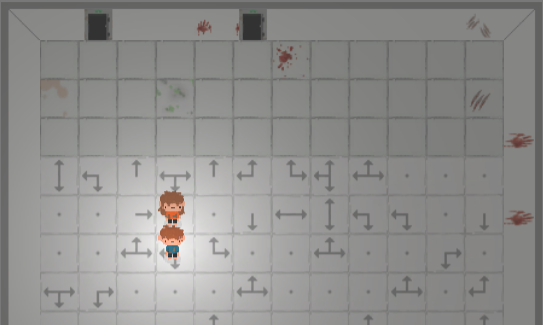
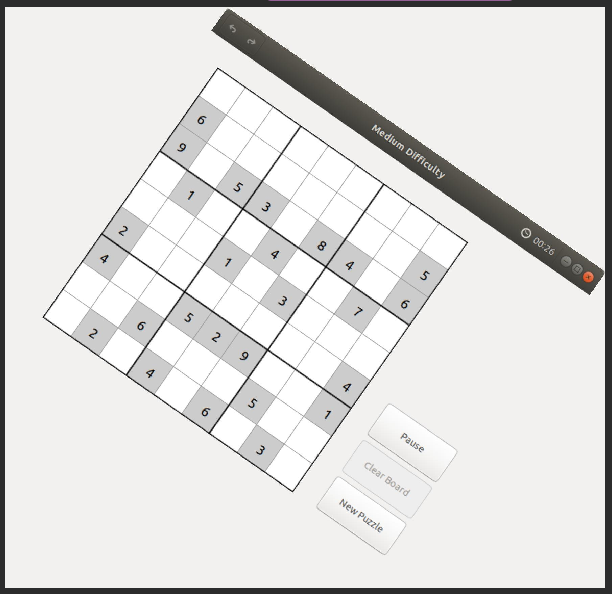
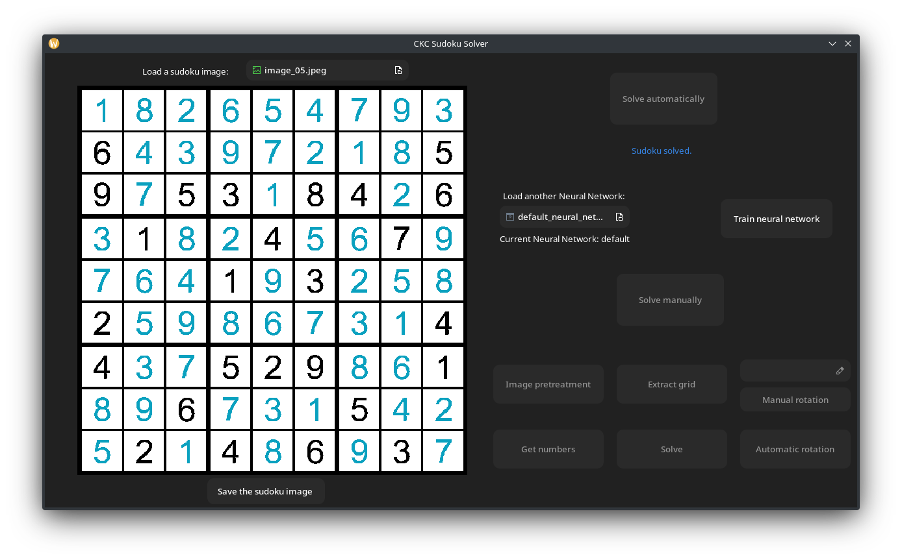

Hi, 👋
My name is Timothy and I'm a 19 years old french student currently studying at Shibaura Institute of Technology in Japan during this semester.
My Shool Curriculum
I'm in my 2nd year as a Computer Science student at Epita in Strasbourg, a French engineering school.
There, I've learned to program in various languages like OCaml, Python, C# and C but I didn't get the chance to learn Web programming, that's why I took this class.
I chose to study at SIT this semester for two main reasons:
- I've always wanted to go to Japan, and studying aborad was a perfect time to visit Japan.
- Because SIT is a well known university in Tokyo with a very high reputation.
My Projects
Here is a list of my most ambitious projects done for my school:
Abacus
Abacus was a two week project done in C# where the goal was to make a command-line calculator supporting basic operations (+, -, *, /), priorities (parentheses > * / > + -), and variables.
$ a = 42; b = a / 2; -1 + 2 * (a + b)
> 126
AlteraVita
AlteraVita is a Unity game made in one semester in a group of 4.
It's 2D cooperation game supporting online multiplayer.

CKC
CKC was an application able to resolve any picture of sudoku using Optical Character Recognition. It was made in one semester in a group of 4 people.


About Me
When I have free time I like to play video games as well as board games and read books such as novels and mangas, and I sometimes go to bouldering gyms as it allows me to practice to my favorite sport.
As a lot of other people my favorite things to do are eating and sleeping, and fortunately for me Japan is one of the best place to eat well and cheap, so I'm very happy to be here.
Apart from that my life is not very interesting so I don't have anything else to say.